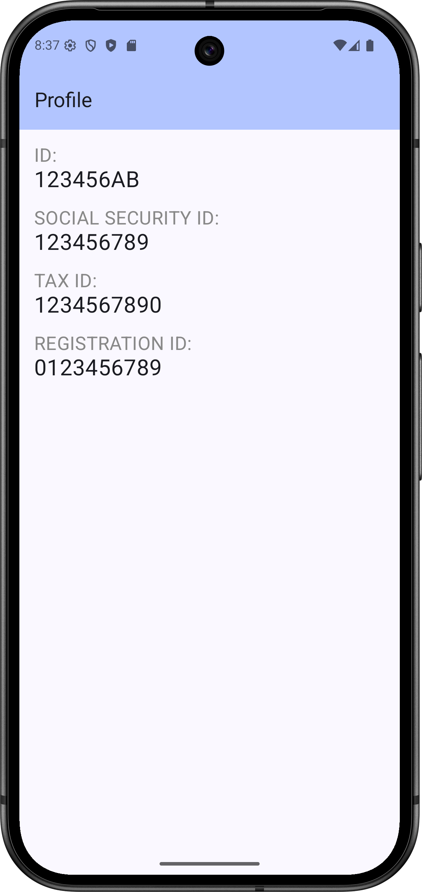

Labor 04 - UI,HorizontalPager, Charts - HR alkalmazás¶
Bevezető¶
A labor során egy HR alkalmazást készítünk el, amelybe belépve a felhasználó meg tudja tekinteni személyes adatait, illetve szabadságot tud rögzíteni. Az alkalmazás nem használ perzisztens adattárolást és valós bejelentkeztetést, csak demo adatokkal dolgozik. A labor fő témái a HorizontalPagerrel való felületkészítés, illetve a Chartok lesznek.



IMSc
A laborfeladatok sikeres befejezése után az IMSc feladat-ot megoldva 2 IMSc pont szerezhető.
Értékelés¶
Osztályzás:
- Főmenü képernyő: 1 pont
- Profil képernyő: 1 pont
- Szabadság képernyő: 1 pont
- Dátumválasztó, napok csökkentése: 1 pont
- Önálló feladat (szabadság továbbfejlesztése): 1 pont
IMSc: Fizetés menüpont megvalósítása
- Kördiagram: 1 IMSc pont
- Oszlopdiagram: 1 IMSc pont
Előkészületek¶
A feladatok megoldása során ne felejtsd el követni a feladat beadás folyamatát.
Git repository létrehozása és letöltése¶
-
Moodle-ben keresd meg a laborhoz tartozó meghívó URL-jét és annak segítségével hozd létre a saját repository-dat.
-
Várd meg, míg elkészül a repository, majd checkout-old ki.
Egyetemi laborokban, ha a checkout során nem kér a rendszer felhasználónevet és jelszót, és nem sikerül a checkout, akkor valószínűleg a gépen korábban megjegyzett felhasználónévvel próbálkozott a rendszer. Először töröld ki a mentett belépési adatokat (lásd itt), és próbáld újra.
-
Hozz létre egy új ágat
megoldasnéven, és ezen az ágon dolgozz. -
A
neptun.txtfájlba írd bele a Neptun kódodat. A fájlban semmi más ne szerepeljen, csak egyetlen sorban a Neptun kód 6 karaktere.
Projekt létrehozása¶
Hozzunk létre egy AndroidWallet nevű projektet Android Studioban:
- Hozzunk létre egy új projektet, válasszuk az Empty Activity lehetőséget.
- A projekt neve legyen
WorkplaceApp, a kezdő packagehu.bme.aut.android.workplaceapp, a mentési hely pedig a kicheckoutolt repository-n belül az WorkplaceApp mappa. - Nyelvnek válasszuk a Kotlin-t.
- A minimum API szint legyen API24: Android 7.0.
- A Build configuration language Kotlin DSL legyen.
FILE PATH
A projekt a repository-ban lévő WorkplaceApp könyvtárba kerüljön, és beadásnál legyen is felpusholva! A kód nélkül nem tudunk maximális pontot adni a laborra!
FILE PATH
A repository elérési helye ne tartalmazzon ékezeteket, illetve speciális karaktereket, mert az AndroidStudio ezekre érzékeny, így nem fog a kód lefordulni. Érdemes a C:\ meghajtó gyökerében dolgozni.
Ha elkészült a projektünk, frissítsük a függőségeink verzióját a libs.versions.toml fájlban:
libs.versions.toml:
[versions]
agp = "8.12.3"
kotlin = "2.2.20"
coreKtx = "1.17.0"
junit = "4.13.2"
junitVersion = "1.3.0"
espressoCore = "3.7.0"
lifecycleRuntimeKtx = "2.9.4"
activityCompose = "1.12.0-alpha09"
composeBom = "2025.09.01"
...
Előzetesen töltsük le az alkalmazás képeit tartalmazó tömörített fájlt és bontsuk ki. A benne lévő drawable könyvtárakat másoljuk be az app/src/main/res mappába (Studio-ban res mappán állva Ctrl+V).
Képernyők kezelése Android alkalmazásokban
A legtöbb mobilalkalmazás jól elkülöníthető oldalak/képernyők kombinációjából épül fel. Az egyik első fő döntés, amit alkalmazástervezés közben meg kell hoznunk, ezeknek a képernyőknek a felépítése, illetve a képernyők közötti navigáció megvalósítása. Egy Android alapú alkalmazás esetén több megoldás közül is választhatunk:
- Activity alapú megközelítés: Minden képernyő egy Activity. Mivel az Activity egy rendszerszintű komponense az Androidnak, ezért ennek kezeléséért is az operációs rendszer a felelős. Mi közvetlenül sose példányosítjuk, hanem Intent-et küldünk a rendszer felé. A navigációért is a rendszer felel, bizonyos opciókat flagek segítségével tudunk beállítani.
- Composable alapú megközelítés: Ez esetben a képernyőink egy vagy több Composable elemből épülnek fel. Ezeknek a kezelése az alkalmazás szintjén történik meg, emiatt mindenképp szükséges egy Activity, mely a megjelenítésért felel. A megjelenítést illetve a navigációt a AppNavigation osztály végzi.
- Egyéb egyedi megoldás: Külső vagy saját könyvtár használata a megjelenítéshez, mely tipikusan az alap View osztályból származik le. Ilyen például a régi Conductor, illetve a Jetpack Compose.
A Jetpack Compose-ban már az AppNAvigation felel a navigációért, és külön-külön hívja meg az egyes Composable függvényeket.
Főmenü képernyő elkészítése (1 pont)¶
Az első képernyő, amit létrehozunk, a főoldal lesz, melyről a többi oldalra tudunk navigálni. A labor során 2 funkciót fogunk meghvalósítani, ezek a Profil és a Szabadság.
A MenuScreen-en egy TopAppBar-t és a gombokat szeretnénk megjeleníteni.
Komponensek¶
Először hozzunk létre egy hu.bme.aut.android.workplaceapp.ui.common package-et. Ebbe fognak kerülni az alapvető fontosságú UI építőelemeink:
TopBar.kt:
package hu.bme.aut.android.workplaceapp.ui.common
import androidx.compose.material3.ExperimentalMaterial3Api
import androidx.compose.material3.MaterialTheme
import androidx.compose.material3.Text
import androidx.compose.material3.TopAppBar
import androidx.compose.material3.TopAppBarDefaults
import androidx.compose.runtime.Composable
import androidx.compose.ui.tooling.preview.Preview
@OptIn(ExperimentalMaterial3Api::class)
@Composable
fun TopBar(
label: String = "Title"
) {
TopAppBar(
title = { Text(text = label) },
colors = TopAppBarDefaults.topAppBarColors(
containerColor = MaterialTheme.colorScheme.inversePrimary
)
)
}
@Composable
@Preview
fun PreviewTopBar() {
TopBar("Workplace App")
}
Ez egy egyszerű AppBar. Ennek segítségével elhelyezhetünk címet, különbőző action-öket, valamint gombokat.
ImageButton:
package hu.bme.aut.android.workplaceapp.ui.common
import androidx.compose.foundation.BorderStroke
import androidx.compose.foundation.Image
import androidx.compose.foundation.layout.Box
import androidx.compose.foundation.layout.PaddingValues
import androidx.compose.foundation.layout.padding
import androidx.compose.foundation.layout.size
import androidx.compose.foundation.shape.RoundedCornerShape
import androidx.compose.material3.OutlinedButton
import androidx.compose.material3.Text
import androidx.compose.material3.darkColorScheme
import androidx.compose.runtime.Composable
import androidx.compose.ui.Alignment
import androidx.compose.ui.Modifier
import androidx.compose.ui.graphics.Color
import androidx.compose.ui.graphics.painter.Painter
import androidx.compose.ui.layout.ContentScale
import androidx.compose.ui.res.painterResource
import androidx.compose.ui.tooling.preview.Preview
import androidx.compose.ui.unit.Dp
import androidx.compose.ui.unit.dp
import hu.bme.aut.android.workplaceapp.R
@Composable
fun ImageButton(
modifier: Modifier,
label: String,
painter: Painter,
size: Dp,
contentDescription: String? = null,
onClick: () -> Unit
) {
OutlinedButton(
onClick = onClick,
shape = RoundedCornerShape(16.dp),
contentPadding = PaddingValues(
start = 0.dp,
top = 0.dp,
end = 0.dp,
bottom = 0.dp
),
border = BorderStroke(1.dp, darkColorScheme().onPrimary)
) {
Box(modifier = modifier.padding(0.dp)) {
Image(
contentScale = ContentScale.Crop,
modifier = modifier
.align(Alignment.Center)
.size(size),
painter = painter,
contentDescription = contentDescription
)
Text(
color = Color.Black,
modifier = modifier.align(Alignment.Center),
text = label
)
}
}
}
@Composable
@Preview
fun PreviewImageButton() {
ImageButton(
modifier = Modifier,
label = "Holiday",
painter = painterResource(id = R.drawable.holiday),
size = 160.dp,
contentDescription = "Holiday",
onClick = {}
)
}
Ez egy egyszerű gomb, amin képeket és szövekeget is könnyen tudunk elhelyezni. Az univerzális felhasználás érdekében a lényeges attribútumok (szöveg, kép, méret, onClick) kivezetésre kerültek paraméterekként.
Felület¶
Most már minden rendelkezésünkre áll, hogy megírjuk a MainScreen képernyőnket is. Ehhez hozzunk létre egy új hu.bme.aut.android.workplaceapp.ui.screen package-et. Ebben lesznek külön package-ekben a képernyőink. A hu.bme.aut.android.workplaceapp.ui.screen.menu package-be hozzuk létre a MenuScreen Kotlin File-t:
package hu.bme.aut.android.workplaceapp.ui.screen.menu
import androidx.compose.foundation.background
import androidx.compose.foundation.layout.Box
import androidx.compose.foundation.layout.Column
import androidx.compose.foundation.layout.Row
import androidx.compose.foundation.layout.Spacer
import androidx.compose.foundation.layout.fillMaxSize
import androidx.compose.foundation.layout.height
import androidx.compose.foundation.layout.padding
import androidx.compose.foundation.layout.width
import androidx.compose.material3.MaterialTheme
import androidx.compose.material3.Scaffold
import androidx.compose.runtime.Composable
import androidx.compose.ui.Alignment
import androidx.compose.ui.Modifier
import androidx.compose.ui.res.painterResource
import androidx.compose.ui.res.stringResource
import androidx.compose.ui.tooling.preview.Preview
import androidx.compose.ui.unit.dp
import hu.bme.aut.android.workplaceapp.R
import hu.bme.aut.android.workplaceapp.ui.common.ImageButton
import hu.bme.aut.android.workplaceapp.ui.common.TopBar
@Composable
fun MenuScreen(
modifier: Modifier = Modifier,
onProfileButtonClick: () -> Unit,
onHolidayButtonClick: () -> Unit,
onSalaryButtonClick: () -> Unit,
onCafeteriaButtonClick: () -> Unit
) {
Scaffold (
topBar = { TopBar(label = stringResource(id = R.string.app_name)) }
) { innerPadding ->
Box(
modifier = modifier
.fillMaxSize()
.background(MaterialTheme.colorScheme.background)
.padding(innerPadding),
contentAlignment = Alignment.Center
) {
Row(verticalAlignment = Alignment.CenterVertically) {
Column(horizontalAlignment = Alignment.CenterHorizontally) {
ImageButton(
onClick = onProfileButtonClick,
modifier = modifier,
label = stringResource(R.string.label_profile),
painter = painterResource(id = R.drawable.profile),
size = 160.dp,
contentDescription = stringResource(R.string.label_profile)
)
Spacer(
modifier = Modifier.height(16.dp)
)
ImageButton(
onClick = onSalaryButtonClick,
modifier = modifier,
label = stringResource(R.string.label_salary),
painter = painterResource(id = R.drawable.payment),
size = 160.dp,
contentDescription = stringResource(R.string.label_salary)
)
}
Spacer(
modifier = Modifier.width(16.dp)
)
///TODO
}
}
}
}
@Preview
@Composable
fun MenuScreenPreview() {
MenuScreen(
onProfileButtonClick = {},
onHolidayButtonClick = {},
onCafeteriaButtonClick = {},
onSalaryButtonClick = {}
)
}
Ennek mintájára, valósítsuk meg a másik két gombot is az alábbi értékekkel:
| Szöveg | Kép |
|---|---|
Holiday |
@drawable.holiday |
Cafeteria |
@drawable.cafeteria |
Hozzuk létre a hivatkozott szöveges erőforrásokat! (A szövegen állva ALT+ENTER)
Navigáció¶
Adjuk hozzá a Navigation3 könyvtárat a projektünkhöz. Ehhez a modul szintű build.gradle.kts fájlra illetve a libs.versions.toml fájlra lesz szükségünk. Keressük meg ezeket, majd írjuk bele a következő függőséget:
libs.versions.toml
[versions]
...
coreSplashscreen = "1.0.1"
nav3Core = "1.0.0-alpha10"
kotlinSerialization = "2.2.20"
kotlinxSerializationCore = "1.9.0"
[libraries]
...
androidx-core-splashscreen = { module = "androidx.core:core-splashscreen", version.ref = "coreSplashscreen" }
androidx-navigation3-runtime = { module = "androidx.navigation3:navigation3-runtime", version.ref = "nav3Core" }
androidx-navigation3-ui = { module = "androidx.navigation3:navigation3-ui", version.ref = "nav3Core" }
kotlinx-serialization-core = { module = "org.jetbrains.kotlinx:kotlinx-serialization-core", version.ref = "kotlinxSerializationCore" }
[plugins]
jetbrains-kotlin-serialization = { id = "org.jetbrains.kotlin.plugin.serialization", version.ref = "kotlinSerialization"}
Ezek után vegyük föl a függőségeinket a modul szintű build.gradle.kts fájlba is:
build.gradle.kts
dependencies {
...
implementation(libs.androidx.core.splashscreen)
implementation(libs.androidx.navigation3.ui)
implementation(libs.androidx.navigation3.runtime)
implementation(libs.kotlinx.serialization.core)
}
Végezetül kapcsoljuk be az alábbi plugint a build.gradle.kts fáj tetején:
plugins {
...
alias(libs.plugins.jetbrains.kotlin.serialization)
}
Ha ezzel megvagyunk akkor szinkronizáljuk a projektet, a jobb fölső sarokban lévő Sync Now gombbal.
Sync
Ne felejtsünk el szinkronizálni, ugyanis ha ez a lépés kimarad, akkor nem fogja megtalálni a szükséges függőségeket, és később ez gondot okozhat!
A navigáció megvalósításához tehát a korábbi laborokon megismerthez hasonlóan szükségünk lesz egy navigációt vezérlő AppNavigation Composable osztályra és egy destination-öket gyűjtő Screen interface-re.
A hu.bme.aut.android.workplaceapp.ui.navigation package-be készítsük is el őket. Jelenleg csak a MenuScreen-ünk fog szerepelni bennük, ezt bővítjük majd a későbbiekben:
Screen.kt:
package hu.bme.aut.android.workplaceapp.ui.navigation
import androidx.navigation3.runtime.NavKey
import kotlinx.serialization.Serializable
interface Screen : NavKey {
@Serializable
data object MenuScreenDestination: Screen
}
AppNavigation.kt:
package hu.bme.aut.android.workplaceapp.ui.navigation
import androidx.compose.runtime.Composable
import androidx.compose.runtime.mutableStateListOf
import androidx.compose.runtime.remember
import androidx.compose.ui.Modifier
import androidx.navigation3.runtime.entryProvider
import androidx.navigation3.ui.NavDisplay
import hu.bme.aut.android.workplaceapp.ui.screen.menu.MenuScreen
@Composable
fun AppNavigation(modifier: Modifier = Modifier) {
val backStack = remember { mutableStateListOf<Screen>(Screen.MenuScreenDestination) }
NavDisplay(
modifier = modifier,
backStack = backStack,
onBack = { backStack.removeLastOrNull() },
entryProvider = entryProvider {
entry<Screen.MenuScreenDestination> {
MenuScreen(
onProfileButtonClick = {},
onSalaryButtonClick = {},
onHolidayButtonClick = {},
onCafeteriaButtonClick = {}
)
}
}
)
}
sealed class
A Kotlin sealed class-jai olyan osztályok, amelyekből korlátozott az öröklés, és fordítási időben minden leszármazott osztálya ismert. Ezeket az osztályokat az enumokhoz hasonló módon tudjuk alkalmazni. Jelen esetben a Menu valójában nem a Screen közvetlen leszármazottja, hanem anonim leszármazott osztálya.
A navigáció használatához a MainActivity-ben hívjuk is meg az AppNavigation composable-t, ami az automatikusan a beállított főképernyőt hozza be az alkalmazás elindításakor.
package hu.bme.aut.android.workplaceapp
import android.os.Bundle
import androidx.activity.ComponentActivity
import androidx.activity.compose.setContent
import androidx.activity.enableEdgeToEdge
import hu.bme.aut.android.workplaceapp.ui.navigation.AppNavigation
import hu.bme.aut.android.workplaceapp.ui.theme.WorkplaceAppTheme
class MainActivity : ComponentActivity() {
override fun onCreate(savedInstanceState: Bundle?) {
super.onCreate(savedInstanceState)
enableEdgeToEdge()
setContent {
WorkplaceAppTheme {
AppNavigation()
}
}
}
}
Több navigációs gráf
A Navigation3 könyvtár használatával több navigációs gráf létrehozása és kezelése is lehetséges, azonban a legtöbb alkalmazásnál elegendő egyetlen navigációs osztály.
Ha most elindítjuk az alkalmazást, akkor már mind a 4 gombot látjuk, azonban még egyik sem működik.
BEADANDÓ (1 pont)
Készíts egy képernyőképet, amelyen látszik a elkészült főoldal kép (emulátoron, készüléket tükrözve vagy képernyőfelvétellel), egy ahhoz tartozó kódrészlet, valamint a neptun kódod a kódban valahol kommentként! A képet a megoldásban a repository-ba f1.png néven töltsd föl!
A képernyőkép szükséges feltétele a pontszám megszerzésének.
Profil képernyő elkészítése (1 pont)¶
A Profil képernyő két lapozható oldalból fog állni (HorizontalPager), amelyen a következő információk lesznek megtalálhatóak:
- Első oldal
- Név
- Lakcím
- Második oldal
- Személyi szám
- TAJ szám
- Adószám
- Törzsszám
Adatmodell¶
Hozzunk létre egy data package-et, azon belül egy Person adatosztályt. Ebben fogjuk tárolni az oldalakon megjelenő adatokat. Az adat típusú osztályok esetében a Kotlin automatikusan generál gyakran használt függvényeket. Például az equals() és a hashCode() függvényeket különböző objektumok összehasonlításához, illetve egy toString() függvényt, mely visszaadja a tárolt változók értékét.
package hu.bme.aut.android.workplaceapp.data
data class Person(
val name: String,
val email: String,
val address: String,
val id: String,
val socialSecurityNumber: String,
val taxId: String,
val registrationId: String
)
A Person osztály példányának elérésére hozzunk létre egy DataManager osztályt (szintén a data package-en belül). Ezzel fogjuk szimulálni a valós adatelérést (Singleton mintát használunk, hogy az alkalmazás minden részéből egyszerűen elérhető legyen, ehhez a Kotlin által biztosított object kulcsszót használjuk):
package hu.bme.aut.android.workplaceapp.data
object DataManager {
val person = Person(
"Test User", "testuser@domain.com",
"1234 Test, Random Street 1.",
"123456AB",
"123456789",
"1234567890",
"0123456789"
)
}
A profiloldalon az a célunk, hogy két külön részben megjelenítsük a normál és részletes adatokat. A két oldal között vízszintes swipe-al lehet majd lépni. Ehhez egy HorizontalPager-t fogunk használni, mely Composable függvények között képes ilyen interakciókat megvalósítani.
Komponensek¶
Először hozzunk létre a hu.bme.aut.android.workplaceapp.ui.common package*be egy InfoField nevű segéd *Composable-t, ami az adatok megjelenítését fogja segíteni:
package hu.bme.aut.android.workplaceapp.ui.common
import androidx.compose.foundation.layout.Column
import androidx.compose.foundation.layout.padding
import androidx.compose.material3.Text
import androidx.compose.runtime.Composable
import androidx.compose.ui.Modifier
import androidx.compose.ui.graphics.Color
import androidx.compose.ui.tooling.preview.Preview
import androidx.compose.ui.unit.dp
import androidx.compose.ui.unit.sp
@Composable
fun InfoField(title: String, value: String) {
Column(
modifier = Modifier.padding(bottom = 16.dp)
) {
Text(
color = Color.Gray,
text = title,
fontSize = 20.sp
)
Text(
text = value,
fontSize = 24.sp
)
}
}
@Preview
@Composable
fun PreviewInfoField() {
InfoField(title = "Name", value = "Test User")
}
Felület¶
Ezek után készítsük el a két profil oldalunkat. A hu.bme.aut.android.workplaceapp.ui.screen.profile package-be hozzuk létre az alábbi fájlokat:
ProfileFirstPage
package hu.bme.aut.android.workplaceapp.ui.screen.profile
import androidx.compose.foundation.layout.Column
import androidx.compose.foundation.layout.fillMaxSize
import androidx.compose.foundation.layout.padding
import androidx.compose.runtime.Composable
import androidx.compose.ui.Modifier
import androidx.compose.ui.tooling.preview.Preview
import androidx.compose.ui.unit.dp
import hu.bme.aut.android.workplaceapp.ui.common.InfoField
@Composable
fun ProfileFirstPage(
name: String,
email: String,
address: String
) {
Column(
modifier = Modifier
.padding(16.dp)
.fillMaxSize()
) {
InfoField(title = "NAME:", value = name)
InfoField(title = "EMAIL:", value = email)
InfoField(title = "ADDRESS:", value = address)
}
}
@Preview(showBackground = true)
@Composable
fun PreviewProfileFirstPage() {
ProfileFirstPage(
name = "Test User",
email = "test@email",
address = "Test Street"
)
}
Ez a Composable függvény fog felelni az első oldalért, a következő pedig a második oldalért.
ProfileSecondPage
package hu.bme.aut.android.workplaceapp.feature.profile
import androidx.compose.foundation.layout.Column
import androidx.compose.foundation.layout.fillMaxSize
import androidx.compose.foundation.layout.padding
import androidx.compose.runtime.Composable
import androidx.compose.ui.Modifier
import androidx.compose.ui.tooling.preview.Preview
import androidx.compose.ui.unit.dp
import hu.bme.aut.android.workplaceapp.ui.view.InfoField
@Composable
fun ProfileSecondPage(
id: String,
socialSecurityId: String,
taxId: String,
registrationId: String
) {
Column(
modifier = Modifier
.padding(16.dp)
.fillMaxSize()
) {
InfoField(title = "ID:", value = id)
InfoField(title = "SOCIAL SECURITY ID:", value = socialSecurityId)
InfoField(title = "TAX ID:", value = taxId)
InfoField(title = "REGISTRATION ID:", value = registrationId)
}
}
@Preview(showBackground = true)
@Composable
fun PreviewProfileSecondPage() {
ProfileSecondPage(
id = "123456",
socialSecurityId = "A89FSE568TZ",
taxId = "GO894GE56",
registrationId = "R6879SDLTH"
)
}
A függvények paraméterei a profil egyes adatai lesznek String formátumban.
Ha ezekkel megvagyunk, készítsük el a ProfileScreen nevű Composable függvényünket az alábbiak szerint:
package hu.bme.aut.android.workplaceapp.ui.screen.profile
import androidx.compose.foundation.ExperimentalFoundationApi
import androidx.compose.foundation.layout.fillMaxSize
import androidx.compose.foundation.layout.padding
import androidx.compose.foundation.pager.HorizontalPager
import androidx.compose.foundation.pager.rememberPagerState
import androidx.compose.material3.Scaffold
import androidx.compose.runtime.Composable
import androidx.compose.ui.Modifier
import androidx.compose.ui.res.stringResource
import androidx.compose.ui.tooling.preview.Preview
import hu.bme.aut.android.workplaceapp.R
import hu.bme.aut.android.workplaceapp.data.DataManager
import hu.bme.aut.android.workplaceapp.ui.common.TopBar
@OptIn(ExperimentalFoundationApi::class)
@Composable
fun ProfileScreen(
modifier: Modifier = Modifier
) {
Scaffold(
topBar = {
TopBar(stringResource(id = R.string.label_profile))
}
) { innerPadding ->
val pagerState = rememberPagerState(pageCount = { 2 })
val profile = DataManager.person
HorizontalPager(
modifier = modifier
.padding(innerPadding)
.fillMaxSize(),
state = pagerState
) {
when (it) {
0 -> {
ProfileFirstPage(
name = profile.name,
email = profile.email,
address = profile.address
)
}
1 -> {
ProfileSecondPage(
id = profile.id,
socialSecurityId = profile.socialSecurityNumber,
taxId = profile.taxId,
registrationId = profile.registrationId
)
}
}
}
}
}
@Composable
@Preview
fun PreviewProfileScreen() {
ProfileScreen()
}
Itt először is létre kell hozunk egy pagerState nevű változót, amit át fogunk adni a HorizontalPager-nek. Ez tartalmazza, hogy hány oldal lesz az adott Composable-ön. Ezt követően szükség lesz egy profilra, amit már korábban definiáltunk egy object-ként. Végül a HorizontalPager segítségével létrehozzuk a lapozható oldalt, amin elhelyezzük a két Composable függvényt 1-1 oldalként. Az aktuális oldalt pedig az it segítségével választjuk ki.
Végük kössük be a ProfileScreen-t a navigáciba:
Screen.kt:
package hu.bme.aut.android.workplaceapp.ui.navigation
import androidx.navigation3.runtime.NavKey
import kotlinx.serialization.Serializable
interface Screen : NavKey {
@Serializable
data object MenuScreenDestination: Screen
@Serializable
data object ProfileScreenDestination: Screen
}
AppNavigation.kt:
package hu.bme.aut.android.workplaceapp.ui.navigation
import androidx.compose.runtime.Composable
import androidx.compose.runtime.mutableStateListOf
import androidx.compose.runtime.remember
import androidx.compose.ui.Modifier
import androidx.navigation3.runtime.entryProvider
import androidx.navigation3.ui.NavDisplay
import hu.bme.aut.android.workplaceapp.ui.screen.menu.MenuScreen
import hu.bme.aut.android.workplaceapp.ui.screen.profile.ProfileScreen
@Composable
fun AppNavigation(modifier: Modifier = Modifier) {
val backStack = remember { mutableStateListOf<Screen>(Screen.MenuScreenDestination) }
NavDisplay(
modifier = modifier,
backStack = backStack,
onBack = { backStack.removeLastOrNull() },
entryProvider = entryProvider {
entry<Screen.MenuScreenDestination> {
MenuScreen(
onProfileButtonClick = {
backStack.add(Screen.ProfileScreenDestination)
},
onSalaryButtonClick = {},
onHolidayButtonClick = {},
onCafeteriaButtonClick = {}
)
}
entry<Screen.ProfileScreenDestination> {
ProfileScreen()
}
}
)
}
Figyeljük meg, hogy hogyan adjuk hozzá a backStack-hez az új destination-ünket!
Próbáljuk ki az alkalmazást! A Profile gombra kattintva megjelennek a felhasználó adatai, és lehet lapozni is.
BEADANDÓ (1 pont)
Készíts egy képernyőképet, amelyen látszik a profil oldal (emulátoron, készüléket tükrözve vagy képernyőfelvétellel), melyben az egyik mező helyére a neptun kódod van kírva, illetve a HorizontalPager kódrészlete! A képet a megoldásban a repository-ba f2.png néven töltsd föl!
A képernyőkép szükséges feltétele a pontszám megszerzésének.
Szabadság képernyő elkészítése (1 pont)¶
A Szabadság képernyőn egy kördiagrammot fogunk megjeleníteni, ami azt mutatja meg százalékos arányban, hogy mennyi szabadságot vettünk már ki, és mennyi maradt még. A felületen ezen kívül egy gomb segítségével egy új szabadság intervallum kivételét is megengedjük a felhasználónak.
Felület¶
PieChart
A PieChart kirajzoláshoz korábban, a View keretrendszerben az MPAndroidChart library-t használtuk, azonban ez sajnos Jetpack Compose-ra nem működik.
A diagram kirajzolását a YCharts könyvtárral fogjuk megoldani. Ehhez először vegyük is fel a függőséget:
Nyissuk meg a settings.gradle.kts fájlt, és vegyük fel a repositories tagen belülre a következőt:
repositories {
...
maven { url = uri("https://jitpack.io")}
}
Ezzel megadtuk, hogy a jitpack repository-ból is húzhatunk be függőségeket.
Ezután pedig vegyük fel az korábbi függőségekhez hasonlóan a YCharts-ot is:
libs.versions.toml:
[versions]
...
ycharts = "2.1.0"
[libraries]
...
ycharts = { module = "co.yml:ycharts", version.ref = "ycharts" }
build.gradle.kts (modul szintű):
dependencies {
...
implementation(libs.ycharts)
}
Valamint ezen a fájlon belül keressük meg a minSdk változót, és írjuk át 26-ra, ugyanis ez szükséges a YCharts használatához:
android {
...
defaultConfig{
...
minSdk = 26
...
}
...
}
Ezután szinkronizáljuk a Projectet a jobb fent lévő Sync Now gombbal.
Ha a fájlok letöltődtek készítsük el a hu.bme.aut.android.workplaceapp.ui.screen.holiday package-ben a HolidayScreen composable függvényünket az alábbiak szerint:
package hu.bme.aut.android.workplaceapp.ui.screen.holiday
import androidx.compose.foundation.layout.Arrangement
import androidx.compose.foundation.layout.Column
import androidx.compose.foundation.layout.fillMaxSize
import androidx.compose.foundation.layout.padding
import androidx.compose.material3.Scaffold
import androidx.compose.runtime.Composable
import androidx.compose.runtime.getValue
import androidx.compose.runtime.mutableStateOf
import androidx.compose.runtime.remember
import androidx.compose.runtime.setValue
import androidx.compose.ui.Alignment
import androidx.compose.ui.Modifier
import androidx.compose.ui.tooling.preview.Preview
import hu.bme.aut.android.workplaceapp.ui.common.TopBar
@Composable
fun HolidayScreen(
modifier: Modifier = Modifier
) {
var showDialog by remember { mutableStateOf(false) }
Scaffold (
topBar = {
TopBar("Holiday")
}
) { innerPadding ->
Column(
modifier = modifier
.padding(innerPadding)
.fillMaxSize(),
horizontalAlignment = Alignment.CenterHorizontally,
verticalArrangement = Arrangement.Center
) {
//PieChartData létrehozása
//...
//PieChartConfig létrehozása
//...
//PieChart létrehozása - PieChartData, PieChartConfig segítségével
//...
//Holiday Button
//...
//DatePicker Dialog
//...
}
}
}
@Composable
@Preview
fun PreviewHolidayScreen() {
HolidayScreen()
}
Majd ezt követően töltsük föl a felületet tartalommal:
-
Hozzuk létre a
pieChardDataváltozónkat az alábbiak szerint (Másoljuk be a//PieChartData létrehozásacomment alá):val pieChartData = PieChartData( slices = listOf( PieChartData.Slice("Remaining", 5f, Color(0xFFFFEB3B)), PieChartData.Slice("Taken", 15f, Color(0xFF00FF00)), ), plotType = PlotType.Pie )PieChartData-nak két paramétert tudunk átadni:- slices: Ez a paraméter fogja tartalmazni az adatokat, és az adatok eloszlását, valamint az adatok színét.
- plotType: Ezzel a változóval tudjuk megadni a diagram típusát. Jelen esetben ez most
Pietípus lesz.
PieChartData.Slice-nak négy paramétert tudunk átadni. Mi most csak az első hárommal foglalkozunk:- label: Ez a String fog megjelenni az egyes "szeleteken".
- value: Ez az eloszlás értéke az adatoknak
- color: Ezzel tudjuk beállítani az egyes adatok színét a diagramon.
Az eloszlás értékének átadtuk a ViewModel-ben tárolt két változónkat. Ez minden egyes alkalommal változni fog, hogy ha új szabadság időintervallumot nyújtunk be, valamint, hogy ha kilépünk a Szabadság képernyőről a főmenübe, és vissza, továbbra is meg fogja tartani az értéket.
-
Az előzőhöz hasonlóan hozzuk létre a
pieChartConfigváltozót is:val pieChartConfig = PieChartConfig( backgroundColor = Color.Transparent, labelType = PieChartConfig.LabelType.VALUE, isAnimationEnable = true, labelVisible = true, sliceLabelTextSize = TextUnit(20f, TextUnitType.Sp), animationDuration = 1000, sliceLabelTextColor = Color.Black, inActiveSliceAlpha = .8f, activeSliceAlpha = 1.0f, )- A
PieChartConfig-nak nagyon sok paramétere van, ezek közül csak párat fogunk megnézni a labor során.- backgroundColor: Ezzel tudjuk módosítani a diagram hátterét. Jelen esetben átlátszóra van szükségünk.
- labelType: Ezzel lehet(ne) állítani, hogy az értéket, vagy a százalékot írja ki a diagram egyes szeletein, de ez jelenleg nem működik :)
- isAnimationEnable: Animáció ki-be kapcsolása.
- labelVisible: Ezzel tudjuk ki-be kapcsolni, hogy látszódjon a felirat a diagram szeletein.
- sliceLabelTextSize: Felirat mérete a szeleteken.
- animationDuration: Animáció időtartama.
- sliceLabelTextColor: Felirat színe.
- inActiveSliceAlpha: Inaktív szeletek átlátszósága.
- activeSliceAlpha: Aktív szeletek átlátszósága.
- A
-
PieChartlétrehozása:PieChart( modifier = Modifier .width(400.dp) .height(400.dp), pieChartData, pieChartConfig )- Az előbb létrehozott két változót átadjuk a
PieChartComposable függvénynek, és ezeknek a segítségével létrehozza a kördiagrammot.
- Az előbb létrehozott két változót átadjuk a
Navigáció¶
Végül pedig a HolidayScreen-t is kössük be a navigációba:
package hu.bme.aut.android.workplaceapp.ui.navigation
import androidx.navigation3.runtime.NavKey
import kotlinx.serialization.Serializable
interface Screen : NavKey {
@Serializable
data object MenuScreenDestination: Screen
@Serializable
data object ProfileScreenDestination: Screen
@Serializable
data object HolidayScreenDestination: Screen
}
package hu.bme.aut.android.workplaceapp.ui.navigation
import androidx.compose.runtime.Composable
import androidx.compose.runtime.mutableStateListOf
import androidx.compose.runtime.remember
import androidx.compose.ui.Modifier
import androidx.navigation3.runtime.entryProvider
import androidx.navigation3.ui.NavDisplay
import hu.bme.aut.android.workplaceapp.ui.screen.holiday.HolidayScreen
import hu.bme.aut.android.workplaceapp.ui.screen.menu.MenuScreen
import hu.bme.aut.android.workplaceapp.ui.screen.profile.ProfileScreen
@Composable
fun AppNavigation(modifier: Modifier = Modifier) {
val backStack = remember { mutableStateListOf<Screen>(Screen.MenuScreenDestination) }
NavDisplay(
modifier = modifier,
backStack = backStack,
onBack = { backStack.removeLastOrNull() },
entryProvider = entryProvider {
entry<Screen.MenuScreenDestination> {
MenuScreen(
onProfileButtonClick = {
backStack.add(Screen.ProfileScreenDestination)
},
onSalaryButtonClick = {},
onHolidayButtonClick = {
backStack.add(Screen.HolidayScreenDestination)
},
onCafeteriaButtonClick = {}
)
}
entry<Screen.ProfileScreenDestination> {
ProfileScreen()
}
entry<Screen.HolidayScreenDestination> {
HolidayScreen()
}
}
)
}
Hogy ha most elindítjuk az alkalmazást, akkor a Holiday opciónál már látjuk a diagrammot, azonban változtatni még nem tudunk rajta.
BEADANDÓ (1 pont)
Készíts egy képernyőképet, amelyen látszik a szabadságképernyő (emulátoron, készüléket tükrözve vagy képernyőfelvétellel), egy ahhoz tartozó kódrészlet, valamint a neptun kódod a kódban valahol kommentként! A képet a megoldásban a repository-ba f3.png néven töltsd föl!
A képernyőkép szükséges feltétele a pontszám megszerzésének.
Dátumválasztó megvalósítása (1 pont)¶
Következő lépésként valósítsuk meg a Take Holiday gombot:
-
Ehhez szükségünk lesz a 4. lépésben egy
DialogWindow-ra, de addig is be tudjuk állítani a gomb működését. Ha megnyomjuk a Take Holiday gombot, a dialógus megjelenítését jelző változót igazra állítjuk:Button( onClick = { showDialog = true } ) { Text("Take holiday") }
ViewModel¶
Ahhoz, hogy a képernyők közötti navigációkor ne veszítsük el a szabadságok nyilvántartását (és persze architekturális szempontból is), nem tárolhatjuk ezeket az állapotokat a screen-ekben.
Hozzunk létre a holiday package-ben egy új Kotlin File-t HolidayViewModel néven. Itt fogjuk tárolni a szabadnapok maximális számát, illetve a már kivett szabadnapok számát. (Természetesen ezek az adatok egy valós alkalmazásban valamilyen háttértárról vagy hálózatról jönnének, a viewmodel onnan szerezné be ezeket.)
A HolidayViewModel kódja:
package hu.bme.aut.android.workplaceapp.ui.screen.holiday
import androidx.lifecycle.ViewModel
import androidx.lifecycle.viewModelScope
import kotlinx.coroutines.flow.MutableStateFlow
import kotlinx.coroutines.flow.StateFlow
import kotlinx.coroutines.launch
class HolidayViewModel : ViewModel() {
private val _holidayMaxValue = MutableStateFlow(20)
val maxHolidayValue: StateFlow<Int> = _holidayMaxValue
private val _takenHolidayValue = MutableStateFlow(15)
val takenHolidayValue: StateFlow<Int> = _takenHolidayValue
fun takeHoliday(days: Int) {
viewModelScope.launch {
_takenHolidayValue.value += days
}
}
}
ViewModel
A viewmodel "szebb" és komplexebb használatára a későbbi laborokon lesz példa.
A viewModel használatához először is fel kell vennünk egy új függőséget:
libs.versions.toml:
[versions]
...
lifecycleVersion = "2.9.4"
[libraries]
androidx-lifecycle-viewmodel-compose = { group = "androidx.lifecycle", name="lifecycle-viewmodel-compose", version.ref = "lifecycleVersion" }
build.gradle.kts:
implementation(libs.androidx.lifecycle.viewmodel.compose)
Ezután módosítsuk a HolidayScreen composable paramétereit, hogy átvegye a viewmodel-t, majd azokból szerezzük be a megfelelő álalpotokat:
@Composable
fun HolidayScreen(
modifier: Modifier = Modifier,
viewModel: HolidayViewModel = viewModel()
) {
val maxHolidayValue by viewModel.maxHolidayValue.collectAsState()
val takenHolidayValue by viewModel.takenHolidayValue.collectAsState()
val remainingHolidays = maxHolidayValue - takenHolidayValue
val currentDate = Calendar.getInstance()
var showDialog by remember { mutableStateOf(false) }
Scaffold (
topBar = {
TopBar("Holiday")
}
) { innerPadding ->
Column(
modifier = modifier
.padding(innerPadding)
.fillMaxSize(),
horizontalAlignment = Alignment.CenterHorizontally,
verticalArrangement = Arrangement.Center
) {
//PieChartData létrehozása
val pieChartData = PieChartData(
slices = listOf(
PieChartData.Slice("Remaining", remainingHolidays.toFloat(), Color(0xFFFFEB3B)),
PieChartData.Slice("Taken", takenHolidayValue.toFloat(), Color(0xFF00FF00)),
), plotType = PlotType.Pie
)
...
}
}
}
pieChartData
Figyeljünk arra, hogy a pieChartData-t is frissítsük, ugyanis itt már nem beégetett eloszlás értéket használunk, hanem a viewModel-ben lévő változót!
viewModel
Sokszor az Android Studio nem találja meg a viewModel()-hez szükséges importot. Ilyenkor kézileg írjuk be az importokhoz az alábbi importot:
import androidx.lifecycle.viewmodel.compose.viewModel
Dialógus¶
Ezek után hozzuk létre a dialógus ablakot az alábbiak szerint:
//DatePicker Dialog
if (showDialog) {
val datePickerState = rememberDatePickerState()
DatePickerDialog(
onDismissRequest = {
showDialog = false
},
confirmButton = {
TextButton(
onClick = {
showDialog = false
if (datePickerState.selectedDateMillis != null) {
val diff =
((datePickerState.selectedDateMillis!! - currentDate.timeInMillis) / (24 * 60 * 60 * 1000)).toInt() + 1
viewModel.takeHoliday(diff)
}
}
) {
Text(stringResource(R.string.dialog_ok_button_text))
}
},
dismissButton = {
TextButton(
onClick = {
showDialog = false
}
) {
Text(stringResource(R.string.dialog_dismiss_button_text))
}
}
) {
DatePicker(state = datePickerState)
}
}
A DatePickerDialog-nak az alábbi paramétereket adjuk át:
- onDismissRequest: eseménykezelő arra az esetre, ha a felhasználó nem nyomna gombot, cska a dialógus mellé kattintana.
- confirmButton: megerősítő gomb a választás elfpgadására.
- dismissButton: gomb a folyamat megszakítására.
A DatePickerDialog-ban pedig egy DatePicker-t jelenítünk meg, aminek átadjuk a létrehozott állapotot.
Ezután az alkalmazást elindítva már működik a Take Holiday gombunk.
BEADANDÓ (1 pont)
Készíts egy képernyőképet, amelyen látszik a dátumválasztó kép (emulátoron, készüléket tükrözve vagy képernyőfelvétellel), egy ahhoz tartozó kódrészlet, valamint a neptun kódod a kódban valahol kommentként! A képet a megoldásban a repository-ba f4a.png néven töltsd föl! Emellett készíts egy képernyőképet, amelyen látszik a dátumválasztás eredménye a szabadság képernyőn (emulátoron, készüléket tükrözve vagy képernyőfelvétellel), egy a kommunikációhoz tartozó kódrészlet, valamint a neptun kódod a kódban valahol kommentként! A képet a megoldásban a repository-ba f4b.png néven töltsd föl!
A képernyőkép szükséges feltétele a pontszám megszerzésének.
Önálló feladat (1 pont)¶
-
Csak akkor engedjünk új szabadságot kivenni, hogy ha a kiválasztott nap a mai napnál későbbi. (0.5 pont)
Tipp
Használjuk a
rememberDatePickerStateselectableDatesparaméterét. -
Ha elfogyott a szabadságkeretünk, akkor a Take Holiday gomb legyen letiltva. (0.5 pont)
BEADANDÓ (0.5 pont)
Készíts egy képernyőképet, amelyen látszik a dátumválasztó oldal (emulátoron, készüléket tükrözve vagy képernyőfelvétellel), a korábbi napok tiltásához tartozó kódrészlet, valamint a neptun kódod a kódban valahol kommentként! A képet a megoldásban a repository-ba f5a.png néven töltsd föl!
A képernyőkép szükséges feltétele a pontszám megszerzésének.
BEADANDÓ (0.5 pont)
Készíts egy képernyőképet, amelyen látszik a letiltott gomb (emulátoron, készüléket tükrözve vagy képernyőfelvétellel), egy ahhoz tartozó kódrészlet, valamint a neptun kódod a kódban valahol kommentként! A képet a megoldásban a repository-ba f5b.png néven töltsd föl!
A képernyőkép szükséges feltétele a pontszám megszerzésének.
iMSc feladat (2 pont)¶
Fizetés menüpont megvalósítása¶
A Payment menüpontra kattintva jelenjen meg egy PaymentScreen rajta egy HorizontalPager-rel és két képernyővel (A Profile menüponthoz hasonlóan):
- PaymentTaxesScreen: kördiagram, aminek a közepébe van írva az aktuális fizetés és mutatja a nettó jövedelmet illetve a levont adókat (adónként külön)
- MonthlyPaymentScreen: egy oszlopdiagramot mutasson 12 oszloppal, a havi szinten lebontott fizetéseket mutatva - érdemes az adatokat itt is a DataManager osztályban tárolni
BEADANDÓ (1 iMSc pont)
Készíts egy képernyőképet, amelyen látszik az aktuális fizetés és nettó jövedelem a levont adókkal (emulátoron, készüléket tükrözve vagy képernyőfelvétellel), egy ahhoz tartozó kódrészlet, valamint a neptun kódod a kódban valahol kommentként! A képet a megoldásban a repository-ba f6.png néven töltsd föl!
A képernyőkép szükséges feltétele a pontszám megszerzésének.
BEADANDÓ (1 iMSc pont)
Készíts egy képernyőképet, amelyen látszik a 12 oszlop a havi fizetési adatokkal (emulátoron, készüléket tükrözve vagy képernyőfelvétellel), egy ahhoz tartozó kódrészlet, valamint a neptun kódod a kódban valahol kommentként! A képet a megoldásban a repository-ba f7.png néven töltsd föl!
A képernyőkép szükséges feltétele a pontszám megszerzésének.
Extra feladat¶
Az érdeklődők kedvéért ezen a laboron egy extra feladat is van, viszont ez csak saját tapasztalat szerzésért. Ezért a feladatért nem jár pont!
- Az önálló feladathoz hasonlóan most azt állítsuk be, hogy a DatePicker dialógus ablakon csak a mai illetve a mai + maximális szabadnapok között lehessen választani.